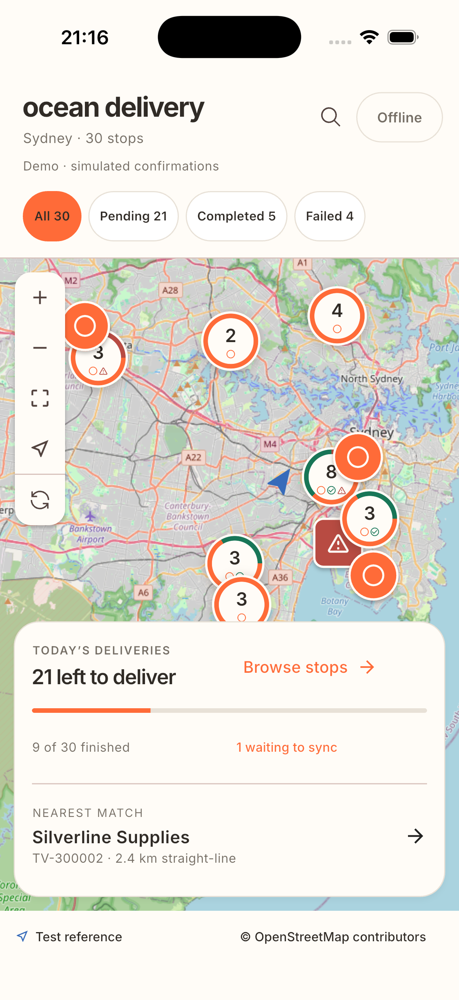
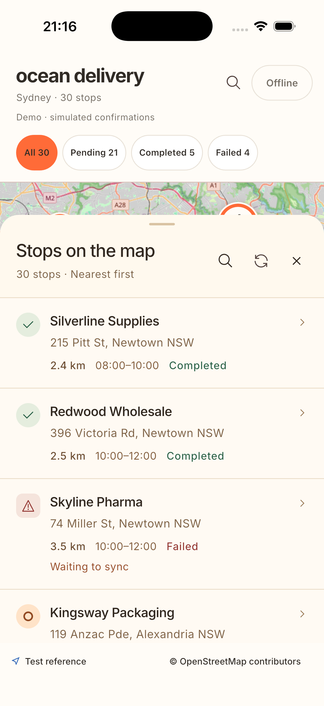

ocean delivery
Every stop.
One clear view.
A map-first Flutter delivery workbench.
Browse stops. Record outcomes. Keep updates locally when offline.


A map-first Flutter delivery workbench.
Browse stops. Record outcomes. Keep updates locally when offline.

